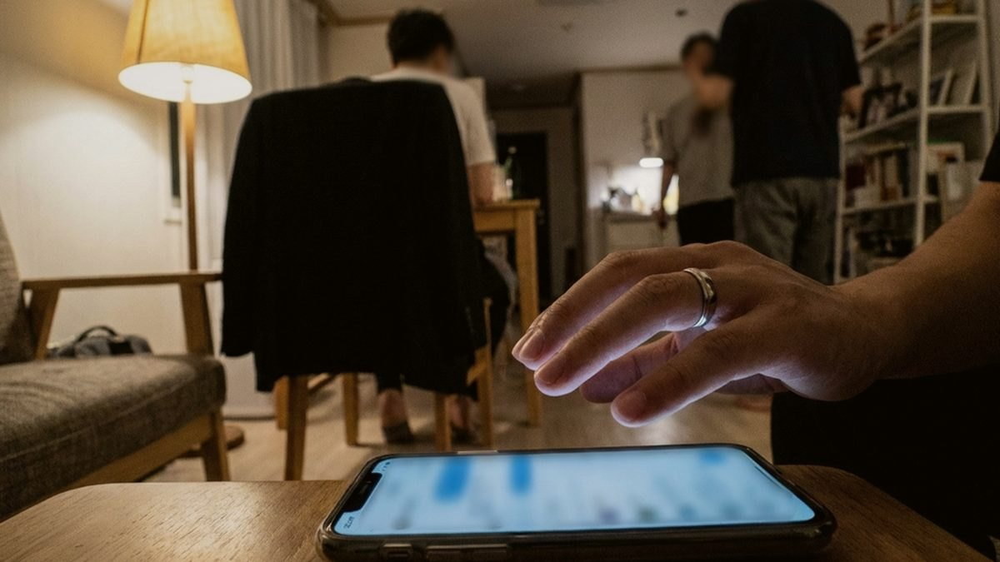
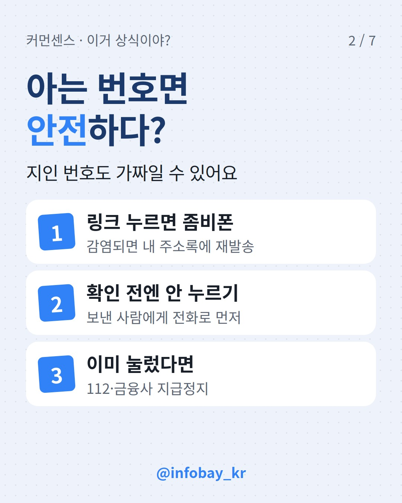
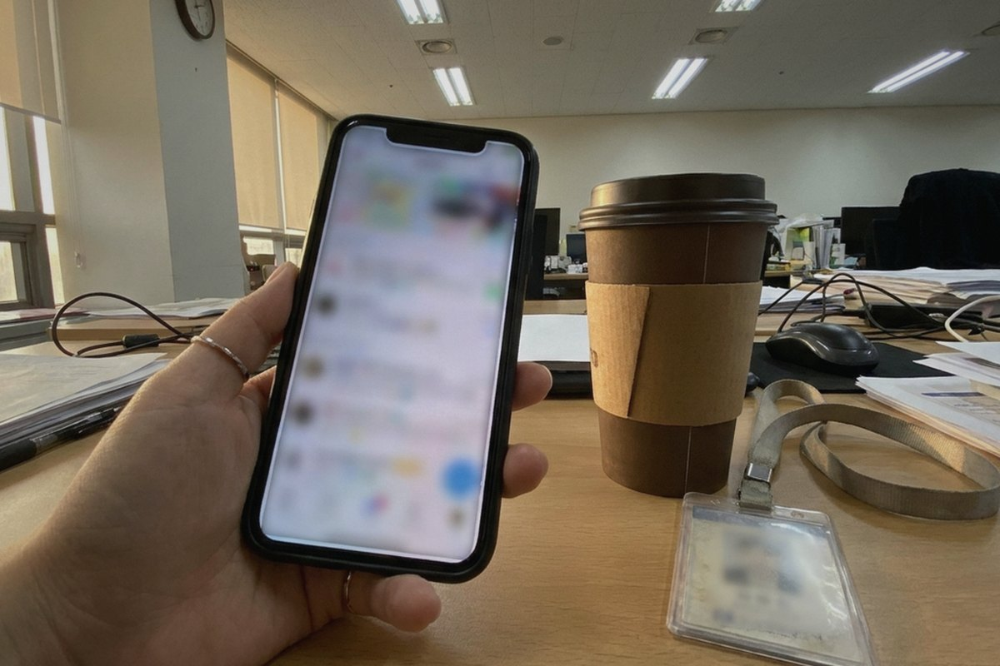

부고 문자를 받고 뭐라고 답할지, 같이 온 링크를 눌러도 될지 망설여질 때 볼 글이에요.
한 줄 결론: 답장은 위로 한 문장, 조문 여부 한 문장이면 돼요. 링크는 보낸 사람에게 확인하기 전까지 누르지 마세요. 아는 번호로 왔어도 마찬가지예요.

확인되지 않은 링크는 누르지 않는 게 정부 안내예요. <cite index="11-12">아는 번호로 온 문자여도 확인되지 않은 링크는 누르지 말라</cite>고 했어요. <cite index="19-8">링크를 누르면 스마트폰이 악성코드에 감염돼 '좀비폰' 역할을 하게 되고</cite> <cite index="19-11">주소록에 저장된 지인들에게 같은 스미싱 문자가 무작위로 발송</cite>돼요. 지인 번호로 가짜 부고가 오는 이유가 이거예요.
피해 규모도 작지 않아요. <cite index="10-4">청첩장·부고장·과태료 고지서로 위장한 문자로 악성앱을 설치시켜 피해자 1000여명에게서 총 120억원을 빼낸 조직</cite>이 2025년 11월 서울경찰청에 붙잡혔어요. <cite index="13-13,13-14">계좌 탈취 피해자의 82%가 50대 이상이었고, 가장 큰 피해를 본 60대 남성은 4억8500만원을 잃었어요.</cite> 부모님 휴대폰도 함께 챙겨 보세요.
부고 링크를 받았을 때 순서

부고 답장은 위로 한 문장에 조문 여부 한 문장을 더하면 돼요. 길게 쓸수록 상주가 답해야 할 부담만 늘어요. 아래 예문은 관례를 바탕으로 다듬은 출발점이에요.
| 관계·상황 | 예문 |
|---|---|
| 친한 친구 | 많이 놀랐지. 오늘 저녁에 빈소로 갈게. 답장은 안 해도 돼. |
| 직장 동료 | 삼가 고인의 명복을 빕니다. 업무는 걱정 마시고 가족분들 곁에 계세요. |
| 상사·거래처 | 삼가 고인의 명복을 빕니다. 내일 오후에 찾아뵙겠습니다. |
| 조문을 못 갈 때 | 직접 찾아뵙지 못해 죄송합니다. 멀리서 깊은 위로를 전합니다. |
| 늦게 확인했을 때 | 소식을 이제야 봤습니다. 늦게 연락드려 죄송합니다. 마음 깊이 위로를 전합니다. |
| 기독교·천주교 유족 | 삼가 조의를 표합니다. 주님의 위로가 함께하시길 바랍니다. |
띄어쓰기도 한 번 볼게요. 국립국어원은 <cite index="30-1,30-2">'삼가 고인의 명복을 빕니다.'처럼 띄어 쓰고 끝에 마침표를 쓰는 것이 올바르다</cite>고 답했어요. 붙여 쓰는 게 격식이라는 말은 근거가 없어요.
대부분 무난하지만 유족의 종교를 안다면 바꾸는 편이 안전해요. 사전에서 명복은 <cite index="45-10,45-12">'죽은 뒤 저승에서 받는 복', 불교에서는 '죽은 뒤에 받는 복덕'</cite>으로 풀이해요. 그래서 기독교계 칼럼에서는 <cite index="39-10">기독교식 조문 인사말로 '삼가 조의를 표합니다'를 쓰면 된다</cite>고 권해요.
받아들이는 정도는 사람마다 달라요. 종교를 모르면 '깊은 위로를 전합니다'처럼 종교색 없는 문구가 제일 무난해요.
사인 묻기와 '호상'이 대표적이에요. 관례 안내에서도 <cite index="7-15">고인의 사인(사망 원인)을 묻지 않는다</cite>고 하고, '호상이네요'는 <cite index="7-54">아무리 고령이더라도 유족에게는 슬픔</cite>이라서 피하라고 해요.
답장이 안 와도 서운해할 일은 아니에요. <cite index="6-33">상주가 매우 바쁜 상황이니 답장이 오지 않아도 재촉하지 말라</cite>는 게 일반적인 예절이에요. 반대로 내가 부고를 보내는 쪽이라면 <cite index="27-3">링크 없이 글자로만 쓰면 받는 사람이 스미싱으로 의심하지 않고 바로 확인할 수 있어요.</cite>

| 상황 | 이렇게 | 피할 것 |
|---|---|---|
| 링크가 같이 온 부고 | 보낸 사람에게 먼저 확인 | 바로 누르기 |
| 이미 링크를 누름 | 112 신고, 금융사 지급정지 요청 | 그냥 넘기기 |
| 유족 종교를 모름 | '깊은 위로를 전합니다' | 종교 단정 |
| 기독교·천주교 유족 | '삼가 조의를 표합니다' | '명복' 반복 |
| 상주 답장이 없음 | 기다리기 | 재촉, 서운한 티 |
보내기 전 체크리스트
Q. 카톡으로 답장해도 실례가 아닌가요?
부고를 카톡으로 받았다면 카톡 답장도 괜찮아요. 가까운 사이면 빈소에서 직접 인사하는 게 더 좋아요.
Q. 아이폰은 링크를 눌러도 괜찮지 않나요?
가짜 사이트에 개인정보를 입력하게 만드는 수법도 있어요. 기종과 상관없이 확인 먼저 하세요.
Q. 조문을 못 가면 문자만 보내도 되나요?
관계에 따라 달라요. 조의금을 함께 보낼지는 조의금 5만원 vs 10만원? 설문 1위와 성균관 권고가 다른 이유를 참고하세요.
빈소에 갈 예정이라면 장례식 조문 예절 실수 6가지, 절은 영정 2번·상주 1번도 이어서 보면 좋아요. 봉투가 헷갈리면 부조봉투 쓰는법에 정리해 뒀어요.
이 상황, 당신은? 부고 문자에 '명복' 대신 '조의'로 바꿔 보낸다 vs 그냥 '명복을 빕니다'면 된다. 커먼센스에서 투표하고 세대별 결과를 확인해 보세요.
2026년 11월 기준, 정책브리핑·서울경찰청 보도·국립국어원 답변 확인.